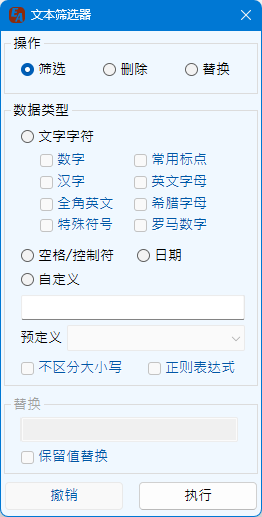

Excel助手Ribbon菜单中数据操作区域点击文本筛选器按钮即可调出如下操作界面：
该功能主要对文本类型的数据单元格进行操作，可用于从外界导入的各类繁杂的信息中提取所需的内容。本功能忽略所选范围内的非文本值数据。
主要操作包括筛选、删除、替换三种，即将单元格文本内符合匹配规则的数据筛选或删除或进行替换，经过筛选、删除或者替换操作的新字符将替换原单元格的内容。
数据类型，即为匹配类型，主要规则如下：
| 数字 | 指0~9这10个数字的任意组合 |
| 常用标点 | 指全角或半角的标点符号、括号，包括`~!@#$%^&*()_+{}[]:;"'<.,>?/|\*等符号 |
| 汉字 | 指所有汉字的组合，Unicode编码4E00~9FFF，不含标点 |
| 英文字母 全角英文 |
指A~Z以及a~z的英文字符，全角类型的英文字母为Unicode编码为FF21~FF3A以及FF41~FF5A的字母 |
| 希腊字母 | 小写的α~ω以及大写Α~Ω的希腊字符 |
| 罗马数字 | 小写的i,v,x,l,c,d,m以及大写的Ⅰ,Ⅴ,Ⅹ,Ⅼ,Ⅽ,Ⅾ,Ⅿ |
| 特殊字符 | 包括带圈或括号的数字、制表符、方块图形、几何图形、杂项符号、印刷符号、数学运算符号等 |
| 空格 控制符 |
包括常规的空格及全角空格，以及UniCode编码中定义的控制类字符，显示为空格的这类字符。有些字符用于断行控制，如删除可能会影响断行控制 |
| 日期 | 可识别的日期格式包括：YYYY年MM月DD日、YYYY/MM/DD、YYYY-MM-DD、YYYY.MM.DD四种类型的日期写法，其中年份必为4位，月，日均位1~2位。该识别不进行日期有效验证，即2020-2-30也将识别为日期 |
为配合更多场景的使用，程序提供了自定义的类型。 当勾选正则表达式时，程序将完全按照正则表达式规则进行匹配和替换，同时替换栏的内容也符合正则表达式要求。
预定义内容为程序内置提供的匹配相应数据的正则表达式，选择时其正则表达式将填写如自定义框内，同时自动开启正则表达式。 预定义的匹配类型包括：
| 选项 | 意义 |
|---|---|
| 手机号码 | 11位，以1开始，连续的11位数字，或者以空格或-分段的号码。例如 1## #### ####，或者1##-####-####，此匹配不进行段号验证，不确定手机号的有效性 |
| 身份证号码 | 18位，连续的数字，末尾为数字或者X、x |
| 座机号码不带分机 | 以0开头，3~4为的区号，以空格或-连接7~8位的电话号码，例如010-12345678 |
| 座机号码带分机 | 座机部分规则同上，之后以空格或-连接4位以内的分机号码，例如020-12345678-123 |
| 邮政编码 | 以非零数字开头，6位连续数字 |
| IPv4地址 | IP地址，如：192.168.1.1，每段取值0~255 |
| 邮箱地址 | 以@连接的常规的Email地址，不验证地址的有效性 |
| 车牌号码 | 以各省简称开头，连接一个字母，后接5~6位不包含I、O字母的数字字母组合。地区代码与车牌编码之间也可以为空格或者·连接（非小数点，为全角中文点） 各省简称包括：京津沪渝桂蒙新宁藏冀豫云辽黑湘皖鲁苏浙赣鄂甘晋陕吉闽贵粤青川琼 |
程序提供两种替换模式，完整替换或者保留原值替换。完整替换为常规意义上的替换，而保留值替换可以在查找到的内容的前或后插入给定的字符。例如：想为所有身份证号码前面加上“IDCard：”字样，选择替换操作，选择自定义类型的身份证号码，勾选保留值替换，在原值的前方文本框输入IDCard后进行替换则可达成要求。
程序提供了撤销上一次操作的功能，该功能仅能撤销上一次的操作。同时，如果操作过后，改变了选择区域撤销将失效，因此执行操作后请确认操作后的结果正确，再进行其他操作，如不正确请及时撤销，否则更改的数据不能通过Excel撤销。
如下示例展示了提取原始数据中的数字信息，并保留标点符号作为分隔：

如下示例展示了提取原始数据中的汉字信息，并保留标点符号作为分隔：

如下示例展示了提取原始数据中的名字信息和性别信息，利用通配符以及|多项匹配：

如下示例展示了为原始数据中的电话号码添加前缀，演示撤销按钮撤销操作：
如下示例展示了利用原始数据中的可见信息属性，删除不可见或不可识别的其他字符：
使用文本数据筛选功能需注意如下事项：